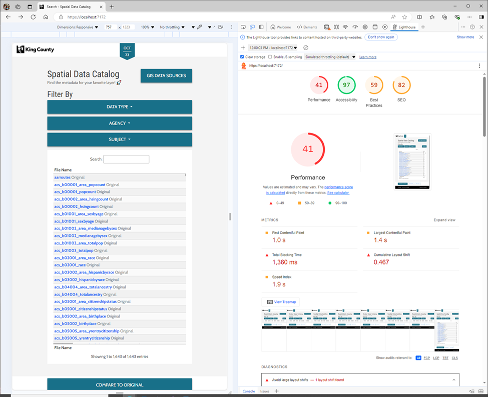
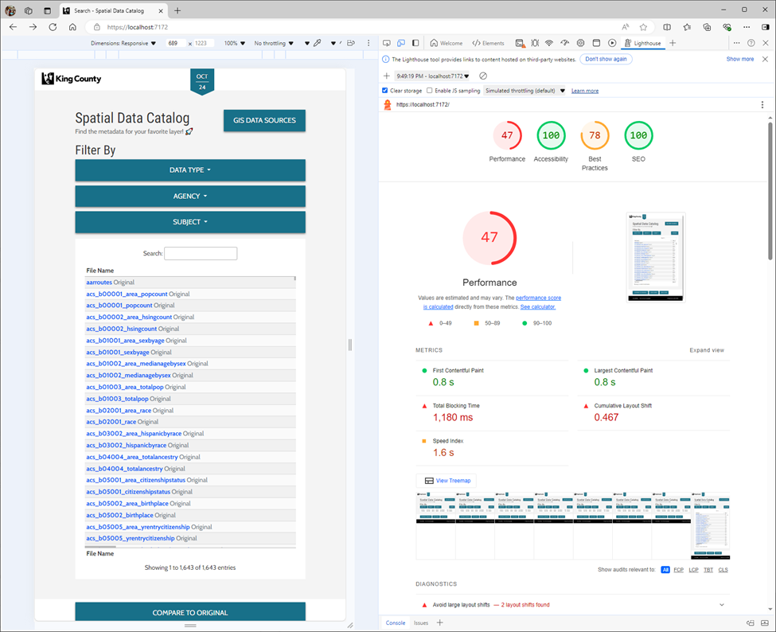
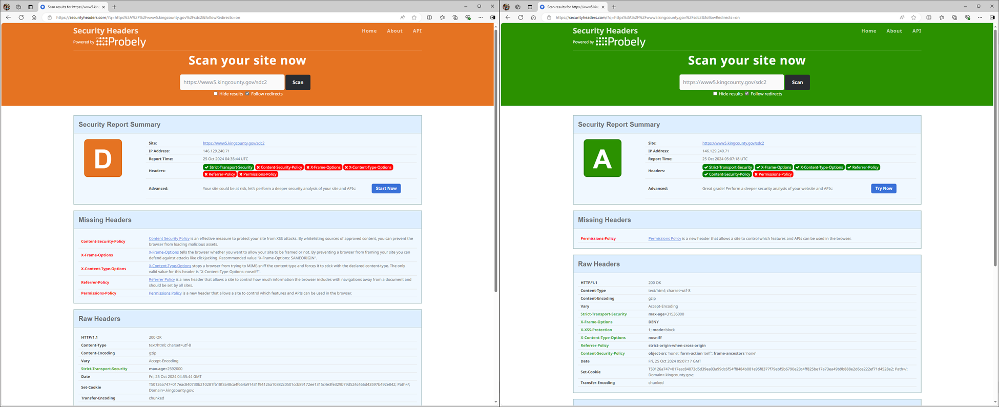

Auditing a .NET 8 web app with Lighthouse
I have a new .NET 8 web app to release, but before I hit deploy on the pipeline to prod, let’s see what we can do to improve it using Lighthouse as a benchmarking and auditing tool.
In any discussion of performance, we need to start with a baseline or snapshot of where we are now. To that end let’s run the Lighthouse tool in the Edge browser.
Alright, while this is usable, it’s nothing to be proud of. I see no reason why we can’t max out the SEO and accessibility scores, while significantly improving the Performance score.
SEO and Accessibility to 100
Let’s start with SEO. “Document does not have a meta description” this is easy enough to solve. Inside VS2022 will navigate to the Solution Explorer and go Pages => Shared => _Layout.cshtml and add few HTML meta tags including author, description, and keywords.
Next up we have “Links are not crawlable” this is an issue with the structure of the HTML on the page. The dropdown buttons in the Filter By section are buttons, but the list items wrap an a-tag, the filter option, that wraps another button, the help icon. The linter in VS2022 also reports that “a button cannot be nested inside an anchor”. Lighthouse doesn’t like it because these filter options trigger a jQuery onclick event which filters the table, so they do not function as links and are uncrawlable for SEO purposes. To fix this I converted the a-tags to div tags. The warning in VS2022 goes away and it prevents Lighthouse from trying to crawl the Filter options as links. Our SEO score is now 100.
In the Accessibility section we a single issue “Background and foreground colors do not have a sufficient contrast ratio.” This is because I used Bootstrap 4’s button-outline for a couple of buttons at the bottom of the page that link to our project management system and developer documentation. To resolve this issue, I’ve changed them to normal buttons and now our Accessibility score is 100.
Best Practices, or not 🤷
Up next, we have the Best Practices category with a starting score of 59. “Uses deprecated APIs” is the first issue, but we can ignore it as this is an artifact of the way that VS2022 runs .NET apps on localhost in debug mode. The second issue is “Uses third-party cookies” where we have 1 remote cookie from the CDN that hosts our logo image, CSS theme, and favicon and 4 from our user telemetry service Microsoft Clarity. To get rid of the cookie from the content delievery network (CDN) we must quit using it. This not complex, we just download the files and place them in our wwwroot folder, then update the references to those files from the CDN’s URL https://cdn.com/styles.css to ~/wwwroot/styles.css which is where we placed the copy of the file that we downloaded from the CDN. Unfortunately, this does not have any impact on our Best Practices score.
Disabling Clarity completely bumps our score up to 78. “Issues were logged in the Issues panel in Chrome Devtools” seemed interesting so I looked in the console and solved a couple of CSS errors where Lighthouse reported that that I need to add or remove the -webkit prefix from rules in the stylesheet. But resolving these console errors had no impact on the Best Practices score. Deploying the app to the development server, to remove the impact of VS2022’s debugging tools, brought the score up to 96. The remaining issues are the CDN cookies associated with dataTables.js. Using the same cookie-less-copy strategy, I made copies of the dataTables files local to this project and updated the references to them. The Best Practices Score is now 100.
This didn’t last long as using Clarity is a business requirement to help us understand our users, so I had to reenable it, bringing the score back down to 78.
Performance from Compression and Caching
Finally, we have the Performance category. Our starting score here was 41, but due to the changes in those other 3 categories it’s dropped even further to 30. Because this page loads 1,700 items into a dataTables.js grid on page load there is a significant large layout shift. I’m going to ignore this glaring issue for now.
Next up is “Enable text compression”. To compress text responses in ASP.NET Core we can leverage the ResponseCompression middleware. Following the instructions in that article, I added the middleware as a startup service in my Program.cs file and called app.UseResponseCompression() along a config object to add the Brotli and Gzip providers. Returning to Lighthouse I can see that text compression is working now, but our static JS and CSS files are not getting compressed?!?
After a quick bit of Googling I appears that I’ve hit a tripping hazard in the ASP.NET Core docs, although they don’t mention it, if you place app.UseResponseCompression after app.UseStaticFiles, your static files will not be compressed. Additionally, if the MIME types of your static files are not in the default list for the ResponseCompression middleware they will also be skipped. This is easy enough to fix by updating the Program.cs file and then using the AddResponseCompression options to explicitly add support for the text/css and text/javascript MIME types as discribed in the docs.
If don’t know what MIME types to add, you can open the Networking panel in the Chrome console, refresh the page, and then click on the name of static file you’re interested in. Under the Headers tab in the Response Headers section, you’ll want to copy the value for the Content-Type: field. Paste that value into the ResponseCompressionDefaults.MimeTypes.Concat([]) array and now you’ve explicitly added support for it. Adding text response compression improved the Performance score to 43, a solid jump.
While we’re looking at static files let's resolve the “Serve static assets with an efficient cache policy” warning. We can do this using the static files middleware to set a Cache-Control header in our Program.cs file. But Microsoft’s docs suggest a max-age of a week whereas Google’s docs suggest a max-age of 1 year. That may sound like a long time at first, but it makes sense when you consider that you can use the asp-append-version="true" tag helper to automatically append a version to each static file. This solves the problem of invalidating cached files from the last build of your app, so that users don’t end up with the prior version of a CSS or JS file in their browser’s cache forever. With static file versioning to support us, there’s no risk to setting a very long caching expiry. This change had no impact on the Performance score.
What did bump the Performance score up to 99 was marking the jQuery and dataTables.js scripts as async. This is because doing so breaks them and leaves the content of the page as blank table. But still, I’ve achieved a nearly perfect score! Walking this back by removing the async modifier from the jQuery and dataTables.js script tags sees the performance score drops back to 43. But we’re on to something here! By marking all the CSS files as async, as well as the supporting (not the core) JS files for dataTables.js and Bootstrap, we can bump the Performance score up to 50 while retaining a functional table. Nice.
That’s where I am going to leave this episode of .NET 8 web app optimization. We’ve shown that we can achieve perfect or nearly perfect scores in every category and then consciously made a choice to not do that. The obvious next step is to not load all 1,700 items into the table on page load. Ideally through some sort of pagination system which both dataTables.js and ASP.NET Core 8 support, but I have not implemented. We can do better, and we know how, but for now this will do.
Security Hardening
As I treat, I’ve added the SecurityHeaders library to set some reasonable defaults for my app and improve it’s hardening against click jacking and other browser-based attacks. Using the SecurityHearders.com tester we can see that our grade has gone from a D to an A. I’ll take it.
